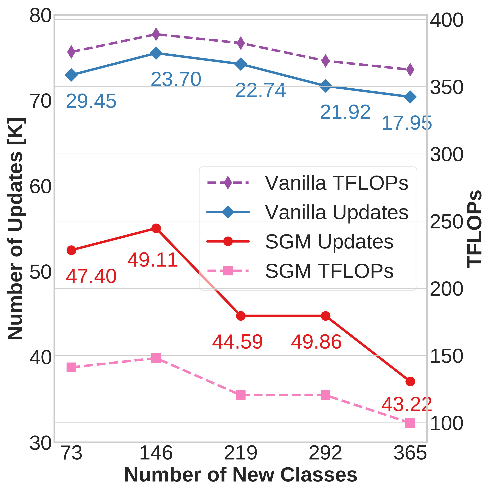
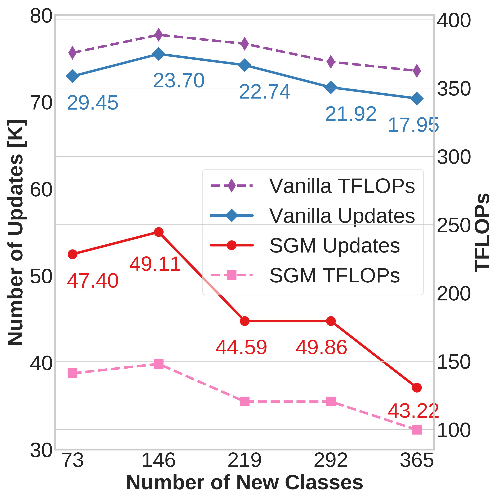
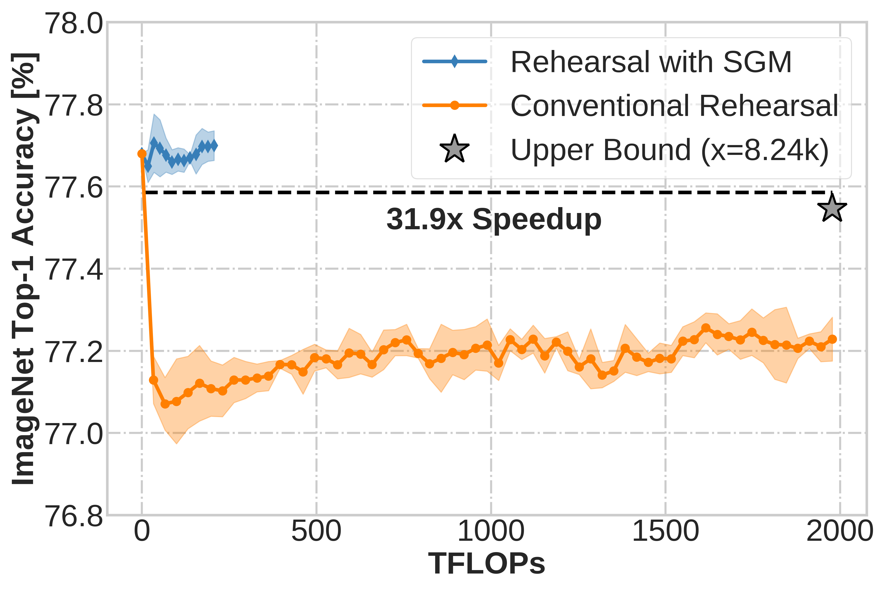

Learning Efficiency
Speed of acquiring new knowledge. SGM requires fewer network updates and TFLOPs than vanilla to reach 99% of the best accuracy on new classes (highlighted).
Pre-trained deep neural networks (DNNs) are being widely deployed by industry for making business decisions and to serve users; however, a major problem is model decay, where the DNN's predictions become more erroneous over time, resulting in revenue loss or unhappy users. To mitigate model decay, DNNs are retrained from scratch using old and new data. This is computationally expensive, so retraining happens only once performance has significantly decreased. Here, we study how continual learning (CL) could potentially overcome model decay in large pre-trained DNNs and also greatly reduce computational costs for keeping DNNs up-to-date. We identify the stability gap as a major obstacle in our setting. The stability gap refers to a phenomenon where learning new data causes large drops in performance for past tasks before CL mitigation methods eventually compensate for this drop. We test two hypotheses to investigate the factors influencing the stability gap and identify a method that vastly reduces this gap. In large-scale experiments for both easy and hard CL distributions (e.g., class incremental learning), we demonstrate that our method reduces the stability gap and greatly increases computational efficiency. Our work aligns CL with the goals of the production setting, where CL is needed for many applications.
We test two hypotheses to examine the stability gap in CIL with pre-trained DNNs:
1. The stability gap is increased in part due to having a large loss at the output layer for the
new classes. To test this hypothesis, we study two methods to mitigate the large loss in the output layer for the new
classes. The first method is to initialize the output layer in a data-driven approach rather than randomly initializing the
output units responsible for the new classes. The second method is a specialized form of soft targets for the network, rather
than the typical hard targets used for the network where these soft targets are designed to improve performance for the new
classes while minimally perturbing others.
2. The stability gap is increased in part due to excessive network plasticity. We test this
hypothesis by controlling the level of plasticity in network layers in a dynamic manner. For hidden layers, we test this
hypothesis using LoRA (Low Rank Adaptation), which reduces the number of trainable parameters in the hidden layers of the
network. For rehearsal methods, after each rehearsal session, these weights are folded into the original network weights.
For the output layer, we test this hypothesis by freezing the output units for classes seen in earlier batches during rehearsal.
1. Weight Initialization. In CIL, typically the output units for new classes are randomly initialized causing those units to produce a high loss during backpropagation. We hypothesize that using data-driven initialization for new class units will reduce the loss and therefore reduce the stability gap.
2. Hard vs. Dynamic Soft Targets. Hard targets are one-hot encoded and enforce strict inter-class independence despite several classes sharing distributional similarities. This property of hard targets, therefore, also causes a large initial loss when learning new classes. Soft targets, on the other hand, can help the network to retain the joint inter-class distributions, which further ameliorates the perturbation of learned classes. To test this, we use soft targets constructed such that the model's predictions on previously learned classes are largely preserved.
3. Limiting Hidden Layer Plasticity Using LoRA. We inject LoRA weights into the linear layers of the network, and only these parameters and the output layer are updated during rehearsal. At the end of the rehearsal session the LoRA parameters are folded into the network. This prevents excessively perturbation of hidden representations, reducing the stability gap.
4. Limiting Output Layer Plasticity via Targeted Freezing. While LoRA restricts plasticity in hidden representations, we hypothesize that restricting plasticity in the output layer could also be helpful. We refer to this technique as old output class freezing (OOCF).
Combining Mitigation Methods & SGM. We refer to the method that combines dynamic soft targets, weight initialization, OOCF, and LoRA as SGM (Stability Gap Mitigation).
After pre-training on ImageNet-1K, the model learns 365 new classes from Places365-LT over five rehearsal sessions. (a) Stability Gap. SGM quickly recovers old performance on ImageNet-1K at the beginning of CL whereas vanilla fails to obtain full recovery. After each rehearsal session (vertical dotted gray line), the final accuracy (%) is highlighted by diamond (SGM), star (joint model), and square (vanilla). The joint model (upper bound) is jointly trained on ImageNet-1K and seen CL batches from the Places365-LT dataset. (b) Computational Efficiency. SGM provides a 16.7X speedup in number of network updates compared to a joint model (upper bound) with the combined 1365 class dataset (ImageNet-1K and Places365-LT combined). For SGM and conventional rehearsal, we show the stability gap in the learning curve averaged over rehearsal sessions.
(a) The loss on new classes when only training the output layer, which reveals soft targets and data-driven weight initialization greatly reduce the initial loss.
(b) Accuracy on ImageNet-1K for hard vs. soft targets, which shows that soft targets reduce the stability gap.
(c) Network plasticity increases the stability gap.
(d-f) Accuracy on new, old, and all classes.

Speed of acquiring new knowledge. SGM requires fewer network updates and TFLOPs than vanilla to reach 99% of the best accuracy on new classes (highlighted).
With sparse updates, SGM significantly reduces FLOPs, improving compute efficiency. SGM provides a 31.9X speedup in TFLOPs compared to a joint model (upper bound) with the combined 1365 class dataset (ImageNet-1K and Places365-LT combined). For SGM and conventional rehearsal, we show the stability gap in the learning curve averaged over rehearsal sessions.
This work was partly supported by NSF awards #1909696, #2326491, #2125362, and #2317706.
@article{harun2023overcoming,
title = {Overcoming the Stability Gap in Continual Learning},
author = {Harun, Md Yousuf and Kanan, Christopher},
journal = {arXiv preprint arXiv:2306.01904},
year = {2023}
}